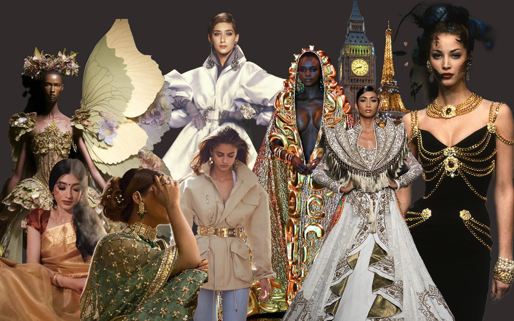
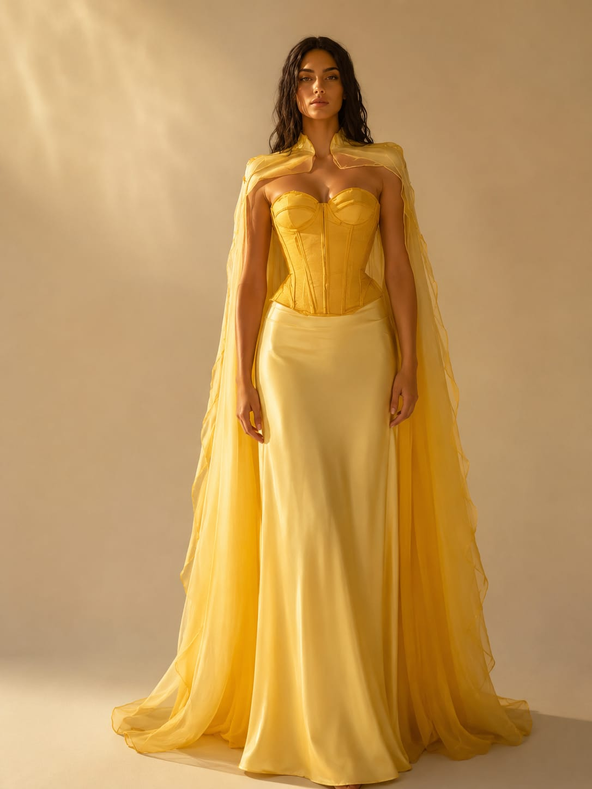
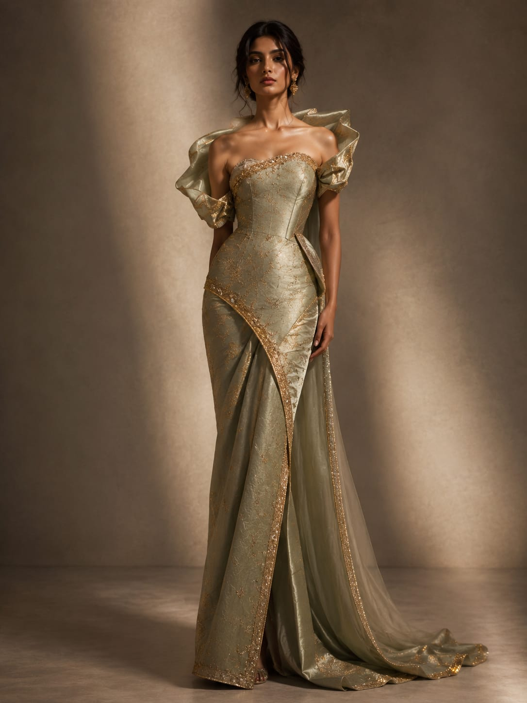
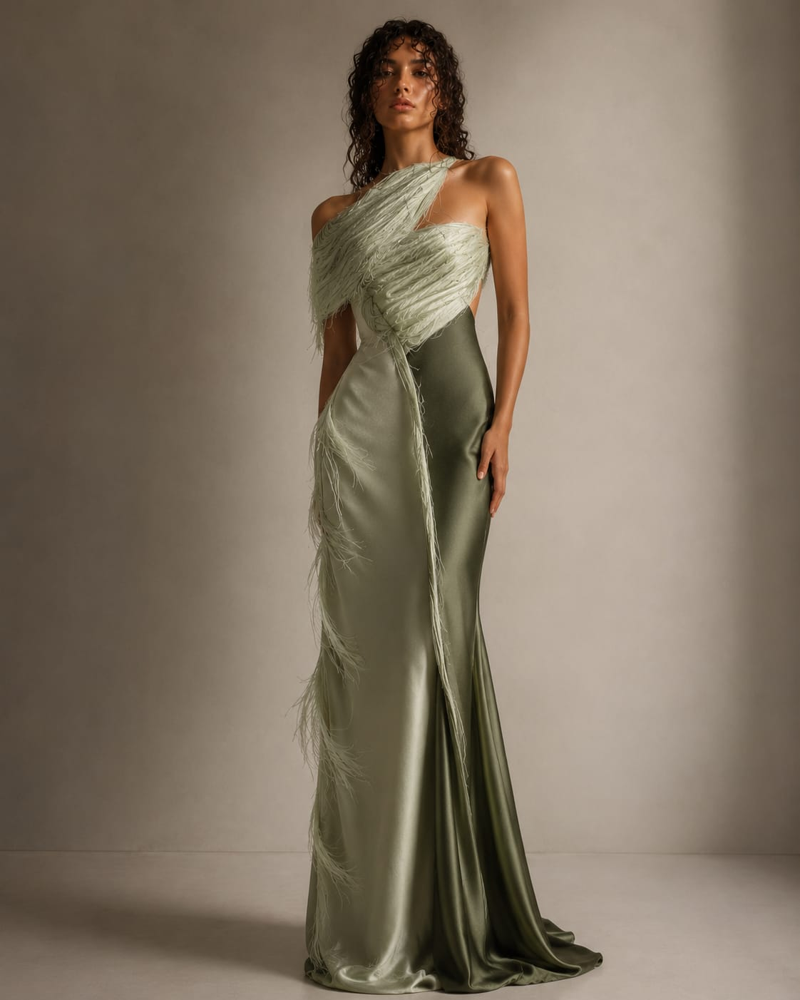
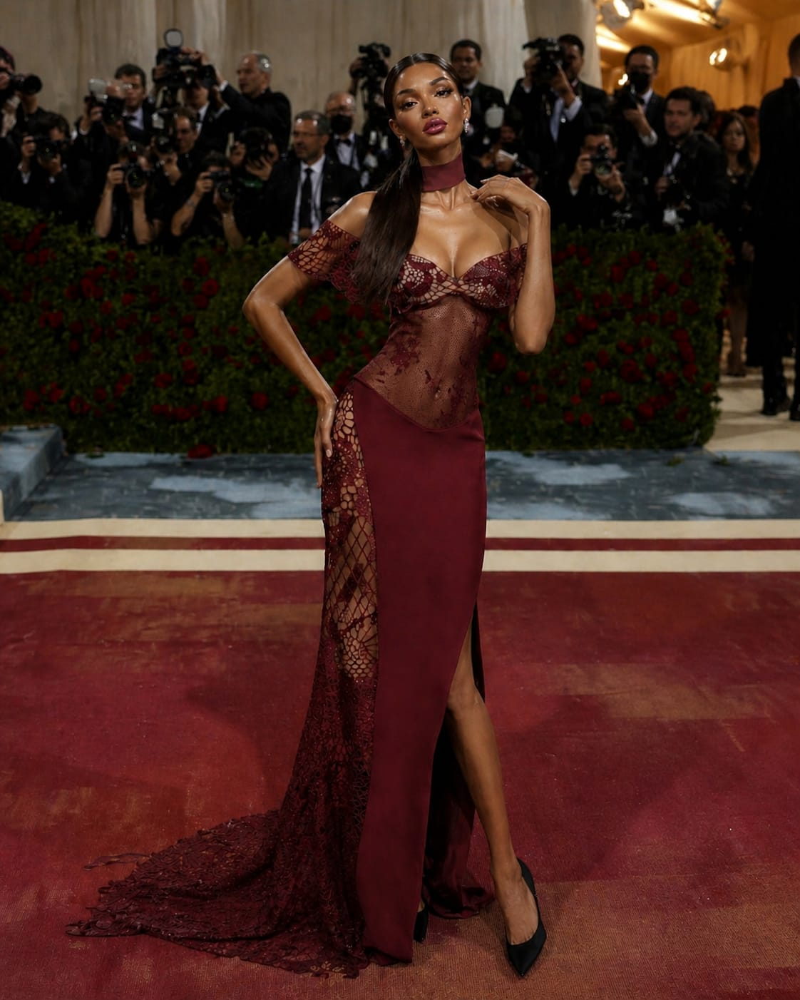

01
Digital fashion designer
Fashion concepts, visual stories, and digital styling ideas shaped with couture mood, tech curiosity, and bold colour.

About Me
I'm Tanisha, a digital fashion designer with a computer science background. My work blends silhouette, colour, texture, and emerging technology to imagine garments that feel dramatic, modern, and wearable in digital-first spaces.
Signature fashion illustrations
Styling and concept exploration
Future-ready digital fashion focus
Projects
Sequins, sculpted drape, editorial styling, and a dramatic eveningwear mood.
02A romantic red lace gown with sharp runway presence and rich texture.
03A motorsport-inspired fashion concept with volume, speed, and graphic contrast.
04A golden couture look with soft drape, sheer cape movement, and sculpted structure.
Project 01
A black and magenta eveningwear design focused on sequins, sculpted drape, and editorial styling. The look is bold, polished, and made for a high-impact runway moment.
Project 02
A red lace gown concept that balances romantic texture with a sharper fashion illustration style. It explores drama through colour, detail, and eveningwear elegance.
Project 03
A Ferrari-inspired fashion illustration built around speed, confidence, and red-car energy. The silhouette uses volume and strong contrast to turn motorsport into couture.
Project 04
A yellow couture gown visualization with golden drape, a sheer cape, and structured corsetry. The project studies softness, light, and graceful movement.
Designs
01

02

03

04

05

06

07
Contact